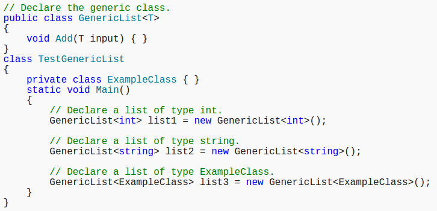

Generics make it possible to design classes and methods that defer the specification of one or more types until the class or method is declared and instantiated by client code.
The most common use of generics is to create collection classes.
In a generic type or method definition, a type parameters is a placeholder for a specific type that a client specifies when they instantiate a variable of the generic type. A generic class, such as GenericList<T>, cannot be used as-is because it is not really a type; it is more like a blueprint for a type. To use GenericList<T>, client code must declare and instantiate a constructed type by specifying a type argument inside the angle brackets. The type argument for this particular class can be any type recognized by the compiler.
For example, by using a generic type parameter T you can write a single class that other client code can use without incurring the cost or risk of runtime casts or boxing operations. In each of these instances of GenericList<T>, every occurrence of T in the class will be substituted at run time with the type argument.

Note that T is available to the nested Node class. When GenericList<T> is instantiated with a concrete type, for example as a GenericList<int>, each occurrence of T will be replaced with int.

When you define a generic class, you can apply restrictions to the kinds of types that client code can use for type arguments when it instantiates your class. If client code tries to instantiate your class by using a type that is not allowed by a constraint, the result is a compile-time error. These restrictions are called constraints. Constraints are specified by using the where contextual keyword. The following table lists the six types of constraints: